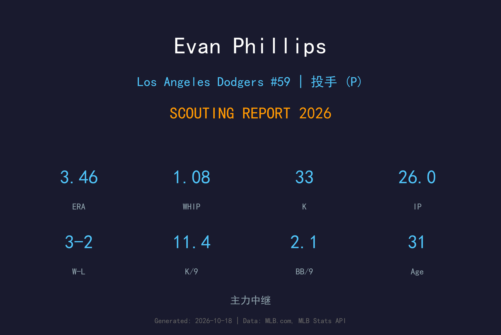
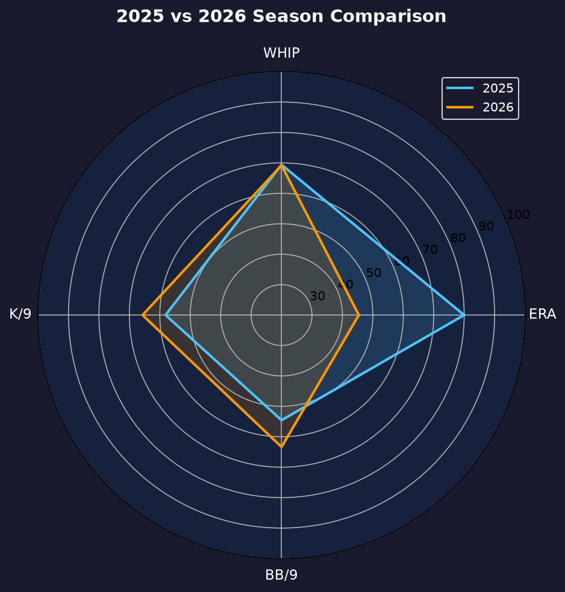
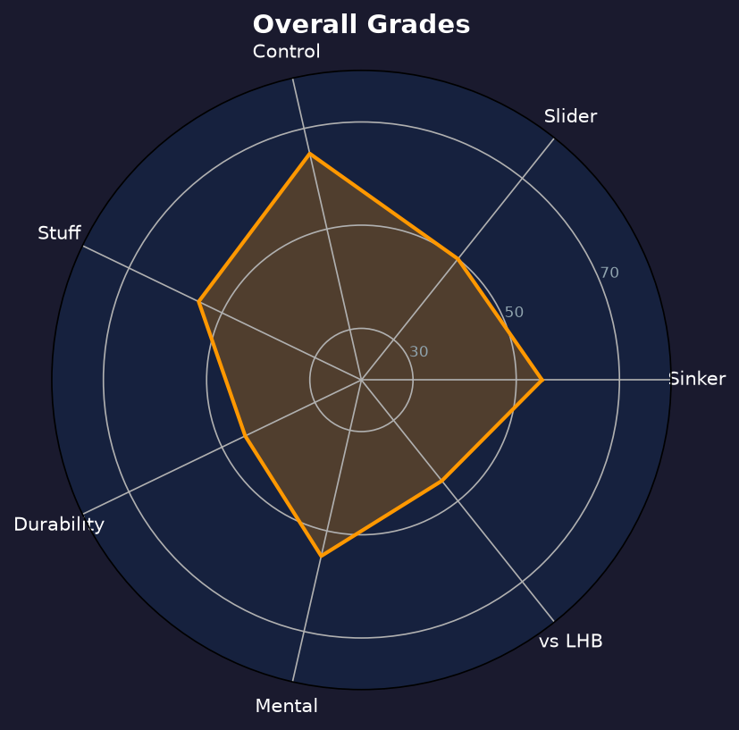

Los Angeles Dodgers #59 | 右投后援 | 右投 / 右打 | 沉球专家

Evan Phillips 是道奇牛棚的资深右投，以低肩侧投的伸卡球与滑球组合著称。2026年2月他与道奇重新签约，回归这座他最熟悉的城市。
2026年他出赛31场，缴出3.46 ERA、1.08 WHIP，26局33次三振仅6次保送（K/BB 比5.50）。8次 hold 显示他仍是 Roberts 信任的中段人选，但3次救援失败（4机会）成为赛季污点。
32岁的 Phillips 已经过了巅峰期，但他的伸卡球对右打者仍有压制力。季后赛3局无失分并拿下1次救援，为赛季画下体面的句点。
2.05 ERA、7次救援成功，成为道奇最可靠的 setup man 之一。
作为道奇冠军牛棚成员，季后赛多局无失分。
2026年2月与道奇再签约，回归后缴出11.4 K/9 的不错三振率。

| 赛季 | G | W-L | ERA | IP | SO | BB | WHIP | SV |
|---|---|---|---|---|---|---|---|---|
| 2025 | 7 | 0-0 | 0.00 | 5.2 | 6 | 2 | 1.06 | 1 |
| 2026 | 31 | 3-2 | 3.46 | 26.0 | 33 | 6 | 1.08 | 1 |
2025年因伤仅出赛7场，2026年2月重签道奇后工作量回升至31场。
主战球种，占全部配球的 45.6%，均速 96.9 mph。直上直下的四缝线速球，负责抢好球数与建立球数领先，是所有配球的基准。
主战球种，占全部配球的 37.1%，均速 86.2 mph。横扫滑球比传统滑球横向位移更大，球路横扫进垒，对同侧打者威胁极大。
辅助配球，占全部配球的 10.2%，均速 92.4 mph。卡特球介于速球与滑球之间，球尾小幅横移，用于破坏打者节奏与制造软弱击球。
辅助配球，占全部配球的 7.1%，均速 96.6 mph。伸卡球下沉明显，主要用于制造滚地球、压低长打率。
2.08 BB/9 与 11.4 K/9 的组合非常漂亮，K/BB 比5.50 甚至优于 Tanner Scott。他的问题在于 contact 品质：26局被敲22安打、5轰，HR/9 1.73 偏高——伸卡球一旦没沉下去，就会被打者扛成长打。
3次救援失败是他2026年最大的减分项。作为临时顶替的 closer 人选，他在4次机会中只守住1次，直接促使道奇在交易截止日前补强牛棚。
3-2、8次 hold、ERA 3.46——这是一份及格的中段牛棚成绩单。考虑到他2025年几乎整季报销，2026年能恢复到这个水平已属不易。季后赛3局无失分拿下1次救援，为他的回归年加分不少。

从伤病回归的资深牛棚，控球仍是他的金字招牌
B 级 / veteran 牛棚
道奇 2026 季后赛战绩：NLDS 3-1 晋级、NLCS 0-4 止步。
| G | IP | ERA | WHIP | SO | BB | H | HR | SV |
|---|---|---|---|---|---|---|---|---|
| 5 | 3.0 | 0.00 | 1.67 | 3 | 3 | 2 | 0 | 1 |
Evan Phillips 的2027赛季将是老兵保卫战。他需要证明从伤病回归后的手臂还能承受更高 leverage 的局数，否则角色会进一步向 low-leverage 倾斜。
2026：31场、3.46 ERA、8HLD——伤后回归的及格成绩单
2027：目标回到40+场、ERA 3.20 以下，争取更多 hold 机会
2028+：以 veteran depth 身份延续，或转型教练
Evan Phillips 出生于北卡罗来纳州克莱顿，2018年在巴尔的摩金莺登上大联盟。2021年他被金莺放弃后加盟道奇，在这里迎来职业生涯的转折——低肩伸卡球被道奇投手开发组重新打磨，成为联盟最难对付的右投后援之一。
2022年是他生涯最佳赛季（2.05 ERA），2024年随队夺得世界大赛冠军。2025年伤病缠身几乎整季报销，2026年2月他与道奇重签，用31场出赛证明油箱里还有油。
场外的 Phillips 是出了名的钓鱼爱好者，休赛期常回到北卡老家垂钓。他的职业生涯是"被放弃球员逆袭"的教科书案例。